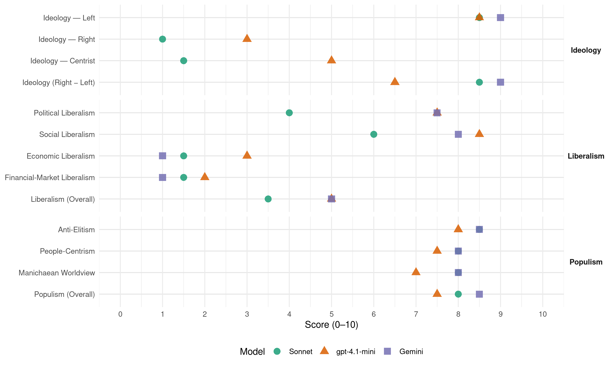

SYRIZA (Greece, 2012)
manifesto_id 34020_201205
Get full text: This site shows derived annotations and short verbatim quotes only. The full manifesto text is © Manifesto Project / WZB — obtain it via manifesto-project.wzb.eu using the manifesto_id above.
Headline scores
| Dimension | Sonnet | gpt-4.1-mini | Gemini |
|---|---|---|---|
| Populism (Overall) | 8.0 | 7.5 | 8.5 |
| Anti-Elitism | 8.5 | 8.0 | 8.5 |
| People-Centrism | 8.0 | 7.5 | 8.0 |
| Manichaean Worldview | 8.0 | 7.0 | 8.0 |
| Ideology (Right − Left) | 8.5 | 6.5 | 9.0 |
| Liberalism (Overall) | 3.5 | 5.0 | 5.0 |
| Political Liberalism | 4.0 | 7.5 | 7.5 |
| Social Liberalism | 6.0 | 8.5 | 8.0 |
| Economic Liberalism | 1.5 | 3.0 | 1.0 |
| Financial-Market Liberalism | 1.5 | 2.0 | 1.0 |
Evidence per dimension
Economic Liberalism
Gemini · score 1.0 · verified · chunk 1
“μεγάλη καπιταλιστική ιδιοκτησία να γίνει δημόσια”
να είναι υπόθεση όλης της κοινωνίας, η μεγάλη καπιταλιστική ιδιοκτησία να γίνει δημόσια και η οικονομία να διευθύνεται
Gemini · score 1.0 · verified · chunk 2
“κατάργηση κάθε ιδιωτικής και επιχειρηματικής δραστηριότητας”
Επιδιώκουμε, λοιπόν, να καταργηθεί κάθε ιδιωτικής και επιχειρηματικής δραστηριότητας σε όλες τις βαθμίδες της Παιδείας.
gpt-4.1-mini · score 3.0 · verified · chunk 1
“Η μεγάλη καπιταλιστική ιδιοκτησία να γίνει δημόσια”
…Εμείς επιδιώκουμε η παραγωγή και η διανομή του πλούτου να είναι υπόθεση όλης της κοινωνίας, η μεγάλη καπιταλιστική ιδιοκτησία να γίνει δημόσια και η οικονομία να διευθύνεται δημοκρατικά. Ο σοσιαλισμός με πλήρη άνθηση της δημοκρατίας και της ελευθερίας είναι ο σκοπός μας.
gpt-4.1-mini · score 3.0 · verified · chunk 2
“επιχειρηματική δραστηριότητα”
…στην αντίληψή μας για την υγεία δεν υπάρχει χώρος για επιχειρηματική κερδοσκοπική δραστηριότητα. Ο βασικός παράγοντας που θα οδηγήσει στη συρρίκνωση και τελικά εξάλειψη της δραστηριότητας του ιδιωτικού τομέα στο χώρο της υγείας θα είναι η καθολικότητα και η ποιότητα του δημόσιου τομέα…
Sonnet · score 1.0 · verified · chunk 1
“η ιδιωτική καπιταλιστική πρωτοβουλία και η κερδοσκοπία είναι απάνθρωπη”
Όλο και περισσότεροι άνθρωποι βλέπουν ότι η ιδιωτική καπιταλιστική πρωτοβουλία και η κερδοσκοπία είναι απάνθρωπη, αλλά και αναποτελεσματική αρχή διεύθυνσης της κοινωνίας.
Sonnet · score 2.0 · verified · chunk 2
“να καταργηθεί κάθε ιδιωτική και επιχειρηματική δραστηριότητας”
Επιδιώκουμε, λοιπόν, να καταργηθεί κάθε ιδιωτική και επιχειρηματική δραστηριότητας σε όλες τις βαθμίδες της Παιδείας.
Financial-Market Liberalism
Gemini · score 1.0 · verified · chunk 1
“Εθνικοποίηση-Κοινωνικοποίηση των Τραπεζών”
ελεγκτικά δικαιώματα των εργαζομένων. Αυτό εννοούμε με το σύνθημα: Εθνικοποίηση-Κοινωνικοποίηση των Τραπεζών. Ανάλογα με την αποστολή
gpt-4.1-mini · score 2.0 · verified · chunk 1
“Το χρηματοπιστωτικό σύστημα μπορεί και πρέπει να γίνει δημόσιο”
…Σημαντικό εργαλείο για τη νέα πορεία είναι ένα αναμορφωμένο χρηματοπιστωτικό σύστημα με τράπεζες δημόσιας ιδιοκτησίας. Αν κάτι απέδειξε η μεγάλη κρίση που ξέσπασε το 2008, αυτό είναι ότι οι ιδιωτικές κερδοσκοπικές τράπεζες είναι επιβλαβείς για τη μεγάλη πλειονότητα των ανθρώπων. … Το χρηματοπιστωτικό σύστημα μπορεί και πρέπει να γίνει δημόσιο και να αναμορφωθεί εκ βάθρων σε ένα νέο σύστημα τραπεζών, με δημοκρατική και διαφανή διοίκηση και διαχείριση με συμμετοχή και ισχυρά ελεγκτικά δικαιώματα των εργαζομένων.
gpt-4.1-mini · score 2.0 · verified · chunk 2
“φαρμακευτικής δαπάνης στους ασθενείς”
…με πρόσχημα την πάταξη της διαφθοράς και της σπατάλης στο χώρο του φαρμάκου, μετακυλύουν το κόστος της φαρμακευτικής δαπάνης στους ασθενείς. Εκατοντάδες φάρμακα εξαιρούνται από τις λίστες συνταγογράφησης, ενώ παράλληλα ως μοναδικό κριτήριο της φαρμακευτικής αγωγής αναδεικνύεται το κόστος του φαρμάκου…
Sonnet · score 1.0 · verified · chunk 1
“λειτουργία ιδιωτικών τραπεζών ωφελεί μόνο τους τραπεζίτες”
Βλέπουν ότι η λειτουργία ιδιωτικών τραπεζών ωφελεί μόνο τους τραπεζίτες και βλάπτει την κοινωνία.
Sonnet · score 2.0 · verified · chunk 2
“εκχώρηση σε ιδιώτες της ευθύνης”
την εκχώρηση σε ιδιώτες της ευθύνης και του προνομίου σχεδιασμού και υλοποίησης μιας πολιτιστικής πολιτικής, η οποία έχει στραμμένο το βλέμμα της στην αγορά
Political Liberalism
Gemini · score 8.0 · verified · chunk 1
“Ριζική αναμόρφωση του κράτους. Δημοκρατία παντού”
αξιοπρεπή μισθό και πλήρη ασφάλιση 6. Ριζική αναμόρφωση του κράτους. Δημοκρατία παντού. Ίσα δικαιώματα για όλους
Gemini · score 7.0 · verified · chunk 2
“δημοκρατικών ελευθεριών, αλλά και εθνικών”
είναι η διεκδίκηση κοινωνικής δικαιοσύνης, δημοκρατικών ελευθεριών, αλλά και εθνικών στόχων του αραβικού
gpt-4.1-mini · score 8.0 · verified · chunk 1
“Δημοκρατία παντού. Ίσα δικαιώματα για όλους και όλες”
…6. Ριζική αναμόρφωση του κράτους. Δημοκρατία παντού. Ίσα δικαιώματα για όλους και όλες Η περίοδος της κυβέρνησης του ΠΑΣΟΚ και της συγκυβέρνησης ΠΑΣΟΚ-ΝΔ-ΛΑΟΣ υπό την πρωθυπουργία του Λουκά Παπαδήμου οδήγησε σε φθορά του δημοκρατικού πολιτεύματος, σε περιφρόνηση του Συντάγματος. Για να εφαρμοστούν οι πολιτικές επιταγές του ηγετικού κέντρου της Ευρωπαϊκής Ένωσης και οι οικονομικές επιταγές της τρόικας παραβιάστηκε το σύνταγμα, εκφυλίστηκαν οι διαδικασίες της Βουλής.
gpt-4.1-mini · score 7.0 · verified · chunk 2
“δημοκρατικό εκπαιδευτικό σύστημα”
…Επιδιώκουμε ένα δημοκρατικό εκπαιδευτικό σύστημα απαλλαγμένο από τα δεινά του αποκλεισμού και των κοινωνικών διακρίσεων, των ανισοτήτων και του ρατσισμού. Απορρίπτουμε εκπαιδευτικά συστήματα που αναπαράγουν τη διάκριση των «πάνω» και των «κάτω»…
Sonnet · score 5.0 · mixed · chunk 1
“Δημοκρατία παντού. Ίσα δικαιώματα για όλους”
6. Ριζική αναμόρφωση του κράτους. Δημοκρατία παντού. Ίσα δικαιώματα για όλους και όλες
Sonnet · score 4.0 · verified · chunk 2
“Πλουραλισμός και ελευθερία έκφρασης”
Επαρκής δημόσια χρηματοδότηση. Εξασφάλιση των απαραίτητων υποδομών για την πολιτιστική δημιουργία. Πλουραλισμός και ελευθερία έκφρασης. Περιφερειακή πολιτιστική πολιτική.
Liberalism (Overall)
Gemini · score 5.0 · verified · chunk 1
“Δημοκρατία παντού. Ίσα δικαιώματα για όλους”
6. Ριζική αναμόρφωση του κράτους. Δημοκρατία παντού. Ίσα δικαιώματα για όλους και όλες 7. Ισχυρό κοινωνικό
Gemini · score 5.0 · verified · chunk 2
“κατάργηση κάθε ιδιωτικής και επιχειρηματικής δραστηριότητας”
Επιδιώκουμε, λοιπόν, να καταργηθεί κάθε ιδιωτικής και επιχειρηματικής δραστηριότητας σε όλες τις βαθμίδες της Παιδείας.
gpt-4.1-mini · score 5.0 · verified · chunk 1
“Δημοκρατία παντού. Ίσα δικαιώματα για όλους και όλες”
…6. Ριζική αναμόρφωση του κράτους. Δημοκρατία παντού. Ίσα δικαιώματα για όλους και όλες Η περίοδος της κυβέρνησης του ΠΑΣΟΚ και της συγκυβέρνησης ΠΑΣΟΚ-ΝΔ-ΛΑΟΣ υπό την πρωθυπουργία του Λουκά Παπαδήμου οδήγησε σε φθορά του δημοκρατικού πολιτεύματος, σε περιφρόνηση του Συντάγματος. Για να εφαρμοστούν οι πολιτικές επιταγές του ηγετικού κέντρου της Ευρωπαϊκής Ένωσης και οι οικονομικές επιταγές της τρόικας παραβιάστηκε το σύνταγμα, εκφυλίστηκαν οι διαδικασίες της Βουλής.
gpt-4.1-mini · score 5.0 · verified · chunk 2
“δικαιώματα όλων των πολιτών”
…μπορούν έτσι να γίνουν δικαιώματα όλων των πολιτών. Ταυτόχρονα, ιδιαίτερα σε περιόδους κρίσης, χρειάζεται να ενθαρρύνεται η οικοδόμηση δικτύων κοινωνικής αλληλεγγύης τα οποία χωρίς να υποκαθιστούν τις υποχρεώσεις του κράτους…
Sonnet · score 3.0 · verified · chunk 1
“νεοφιλελεύθερη δομή, λειτουργία και πολιτική της Ε. Ε. πρέπει να ανατραπεί”
γίνεται ολοφάνερο ότι αυτή η νεοφιλελεύθερη δομή, λειτουργία και πολιτική της Ε. Ε. πρέπει να ανατραπεί.
Sonnet · score 4.0 · verified · chunk 2
“Η Υγεία δεν μπορεί να είναι εμπόρευμα”
8. Η Υγεία δεν μπορεί να είναι εμπόρευμα. Είναι κοινωνικό αγαθό και δικαίωμα όλων
Anti-Elitism
Gemini · score 9.0 · verified · chunk 1
“συνέταιροι του δικομματισμού και οι ομοϊδεάτες τους”
Οι συνέταιροι του δικομματισμού και οι ομοϊδεάτες τους στην ηγεσία της Ευρωπαϊκής Ένωσης
Gemini · score 8.0 · verified · chunk 2
“συνεταίρων του δικομματισμού και της τρόικας”
αποτελεί διακηρυγμένο σκοπό των συνεταίρων του δικομματισμού και της τρόικας. Αυτόν τον σκοπό εξυπηρετεί
gpt-4.1-mini · score 9.0 · verified · chunk 1
“Οι συνέταιροι του δικομματισμού και οι ομοϊδεάτες τους”
…της Ευρωπαϊκής Ένωσης και στο Διεθνές Νομισματικό Ταμείο προσπαθούν να τρομοκρατήσουν και να εκβιάσουν τον ελληνικό λαό ενόψει των εκλογών. Το ίδιο κάνουν παντού, σε όλη την Ευρώπη. Μας λένε ότι το δίλημμα είναι Μνημόνιο ή έξοδος από το Ευρώ και από την Ευρωπαϊκή Ένωση. Το δίλημμα είναι πλαστό. Οι ίδιοι έχουν ομολογήσει ότι το δικό τους κόστος θα είναι τότε πολύ μεγαλύτερο. Αυτό που θέλουν να επιβάλουν στην Ελλάδα και στην Ευρώπη είναι ένα καθεστώς περιορισμένης λαϊκής κυριαρχίας, με τα κοινοβούλια πειθήνια όργανα επικύρωσης αποφάσεων που θα λαμβάνονται αλλού, με κόμματα που εξ αρχής θα αποδέχονται να εκτελούν αποφάσεις άλλων. Εμείς δεν είμαστε πειθήνια πολιτική δύναμη. Δεν έχουμε εξαρτήσεις, δεν υπακούμε σε οικονομικά ισχυρούς και σε πολιτικούς τρομοκράτες ξένους ή ντόπιους. Γι’ αυτό δεν αποδεχόμαστε τον εκβιασμό, δεν αποδεχόμαστε τη συρρίκνωση της λαϊκής κυριαρχίας. Όλες και όλοι εμείς που συγκροτήσαμε τον ΣΥΡΙΖΑ Ενωτικό Κοινωνικό Μέτωπο θέλουμε να ανατρέψουμε τη νοσηρή πολιτική κατάσταση που επιβάλουν οι συνέταιροι του δικομματισμού και οι δορυφόροι τους. Θέλει να ανατρέψει με τις κινητοποιήσεις και με την ψήφο του λαού το καθεστώς που μας έχουν επιβάλει.
gpt-4.1-mini · score 7.0 · verified · chunk 2
“συνεταίρων του δικομματισμού”
…– 3% του ΑΕΠ και παρακάτω, όταν στην Ευρωπαϊκή Ένωση η αντίστοιχη δαπάνη είναι υπερδιπλάσια – αποτελεί διακηρυγμένο σκοπό των συνεταίρων του δικομματισμού και της τρόικας. Αυτόν τον σκοπό εξυπηρετεί το σύνολο των αλλαγών που εφαρμόστηκαν ή προωθούνται στο χώρο της Υγείας…
Sonnet · score 9.0 · verified · chunk 1
“δεν υπακούμε σε οικονομικά ισχυρούς και σε πολιτικούς τρομοκράτες”
Εμείς δεν είμαστε πειθήνια πολιτική δύναμη. Δεν έχουμε εξαρτήσεις, δεν υπακούμε σε οικονομικά ισχυρούς και σε πολιτικούς τρομοκράτες ξένους ή ντόπιους.
Sonnet · score 8.0 · verified · chunk 2
“συνέταιροι του δικομματισμού και της τρόικας”
αποτελεί διακηρυγμένο σκοπό των συνέταιρων του δικομματισμού και της τρόικας. Αυτόν τον σκοπό εξυπηρετεί το σύνολο των αλλαγών
Ideology — Centrist
gpt-4.1-mini · score 5.0 · verified · chunk 1
“Η πολιτική τους ύπαρξη βασίζεται στην εύνοια και στη χρηματοδότηση των οικονομικά ισχυρών”
…Μας λένε ότι δεν μπορεί να παταχθεί η φοροδιαφυγή και η εισφοροδιαφυγή και δεν μπορούν να καταγραφούν οι μεγάλες περιουσίες. Αυτό δεν είναι αλήθεια. Αυτά δεν θέλουν και δεν μπορούν να τα κάνουν τα κόμματα της διαπλοκής και των πελατειακών σχέσεων. Η πολιτική τους ύπαρξη βασίζεται στην εύνοια και στη χρηματοδότηση των οικονομικά ισχυρών.
gpt-4.1-mini · score 5.0 · verified · chunk 2
“δημοκρατικό εκπαιδευτικό σύστημα”
…Επιδιώκουμε ένα δημοκρατικό εκπαιδευτικό σύστημα απαλλαγμένο από τα δεινά του αποκλεισμού και των κοινωνικών διακρίσεων, των ανισοτήτων και του ρατσισμού. Απορρίπτουμε εκπαιδευτικά συστήματα που αναπαράγουν τη διάκριση των «πάνω» και των «κάτω»…
Sonnet · score 1.0 · verified · chunk 1
“Η διέξοδος είναι αριστερά”
Να τι τροφοδοτεί και συσσωρεύει την οργή και τη λαχτάρα να τιμωρηθούν οι υπεύθυνοι. Η τιμωρία όμως δεν φτάνει. Χρειάζεται λύση και διέξοδος. Η διέξοδος είναι αριστερά!
Sonnet · score 2.0 · verified · chunk 2
“Αν όχι τώρα πότε; Αν όχι εμείς ποιος”
Εμείς επιμένουμε: Να ενωθούμε και να τους νικήσουμε! Αν όχι τώρα πότε; Αν όχι εμείς ποιος;
Ideology — Left
Gemini · score 9.0 · verified · chunk 1
“να φορολογηθεί ο πλούτος”
1. Να απαλλαγούμε από τον βραχνά του χρέους 2. Να φορολογηθεί ο πλούτος Και να καταργηθούν οι περιττές δαπάνες
Gemini · score 9.0 · verified · chunk 2
“απαιτήσεων της κερδοφορίας του κεφαλαίου”
που δεν θα είναι δέσμια των απαιτήσεων της κερδοφορίας του κεφαλαίου, αλλά θα ικανοποιεί τις ανάγκες
gpt-4.1-mini · score 9.0 · verified · chunk 1
“Η παραγωγή και η διανομή του πλούτου να είναι υπόθεση όλης της κοινωνίας”
…να εμποδίσουν τους υπαίτιους της κρίσης και της καταστροφής να ασκούν την επιβλαβή δραστηριότητά τους. Εμείς επιδιώκουμε η παραγωγή και η διανομή του πλούτου να είναι υπόθεση όλης της κοινωνίας, η μεγάλη καπιταλιστική ιδιοκτησία να γίνει δημόσια και η οικονομία να διευθύνεται δημοκρατικά. Ο σοσιαλισμός με πλήρη άνθηση της δημοκρατίας και της ελευθερίας είναι ο σκοπός μας.
gpt-4.1-mini · score 8.0 · verified · chunk 2
“κοινωνικής αλληλεγγύης”
…χρειάζεται να ενθαρρύνεται η οικοδόμηση δικτύων κοινωνικής αλληλεγγύης τα οποία χωρίς να υποκαθιστούν τις υποχρεώσεις του κράτους, λειτουργούν συμπληρωματικά και ενισχύουν συλλογικές μορφές δράσης. 8. Η Υγεία δεν μπορεί να είναι εμπόρευμα. Είναι κοινωνικό αγαθό και δικαίωμα όλων…
Sonnet · score 9.0 · verified · chunk 1
“Εθνικοποίηση-Κοινωνικοποίηση των Τραπεζών”
Αυτό εννοούμε με το σύνθημα: Εθνικοποίηση-Κοινωνικοποίηση των Τραπεζών.
Sonnet · score 8.0 · verified · chunk 2
“κερδοσκοπικά κεφάλαια”
ενώ «φιλέτα» παραχωρούνται σε κερδοσκοπικά κεφάλαια. Αυτές οι πολιτικές απειλούν ευθέως την ίδια την υγεία των πολιτών
Ideology (Right − Left)
Gemini · score 9.0 · verified · chunk 1
“Η διέξοδος είναι αριστερά”
να τιμωρηθούν οι υπεύθυνοι. Η τιμωρία όμως δεν φτάνει. Χρειάζεται λύση και διέξοδος. Η διέξοδος είναι αριστερά! Ο ΣΥΡΙΖΑ-Ενωτικό
Gemini · score 9.0 · verified · chunk 2
“κυβέρνηση με πυρήνα και ηγετική δύναμη την Αριστερά”
και να δημιουργήσουμε μια νέα πλειοψηφία και μια νέα κυβέρνηση με πυρήνα και ηγετική δύναμη την Αριστερά.
gpt-4.1-mini · score 7.0 · verified · chunk 1
“Εμείς επιδιώκουμε η παραγωγή και η διανομή του πλούτου να είναι υπόθεση όλης της κοινωνίας”
…να εμποδίσουν τους υπαίτιους της κρίσης και της καταστροφής να ασκούν την επιβλαβή δραστηριότητά τους. Εμείς επιδιώκουμε η παραγωγή και η διανομή του πλούτου να είναι υπόθεση όλης της κοινωνίας, η μεγάλη καπιταλιστική ιδιοκτησία να γίνει δημόσια και η οικονομία να διευθύνεται δημοκρατικά. Ο σοσιαλισμός με πλήρη άνθηση της δημοκρατίας και της ελευθερίας είναι ο σκοπός μας.
gpt-4.1-mini · score 6.0 · verified · chunk 2
“κοινωνικής αλληλεγγύης”
…χρειάζεται να ενθαρρύνεται η οικοδόμηση δικτύων κοινωνικής αλληλεγγύης τα οποία χωρίς να υποκαθιστούν τις υποχρεώσεις του κράτους, λειτουργούν συμπληρωματικά και ενισχύουν συλλογικές μορφές δράσης. 8. Η Υγεία δεν μπορεί να είναι εμπόρευμα…
Sonnet · score 9.0 · verified · chunk 1
“Ο σοσιαλισμός με πλήρη άνθηση της δημοκρατίας”
Ο σοσιαλισμός με πλήρη άνθηση της δημοκρατίας και της ελευθερίας είναι ο σκοπός μας.
Sonnet · score 8.0 · verified · chunk 2
“Απορρίπτουμε τα νεοφιλελεύθερα δόγματα”
Απορρίπτουμε τα νεοφιλελεύθερα δόγματα, που μετατρέπουν τα πιο αδύναμα κοινωνικά στρώματα σε «απασχολήσιμους» εργαζόμενους
Ideology — Right
gpt-4.1-mini · score 3.0 · verified · chunk 1
“Η ένωση της Ευρώπης χρειάζεται νέα εκκίνηση με κοινωνική ευαισθησία”
…Η ένωση της Ευρώπης χρειάζεται νέα εκκίνηση με κοινωνική ευαισθησία, οικολογική φροντίδα, φιλειρηνική εξωτερική πολιτική και δημοκρατία. Και αυτό δεν μπορούν και δεν θέλουν να το κάνουν οι πολιτικές δυνάμεις που κυβερνούν σήμερα.
gpt-4.1-mini · score 3.0 · verified · chunk 2
“εθνικότητά του”
…στο οποίο θα έχει πρόσβαση κάθε άνθρωπος που το έχει ανάγκη, ανεξάρτητα από την οικονομική και κοινωνική του κατάσταση ή την εθνικότητά του. Στην αντίληψή μας για την υγεία δεν υπάρχει χώρος για επιχειρηματική κερδοσκοπική δραστηριότητα…
Sonnet · score 1.0 · verified · chunk 1
“ανεξάρτητη και φιλειρηνική εξωτερική πολιτική”
10. Ανεξάρτητη και φιλειρηνική εξωτερική πολιτική
Sonnet · score 1.0 · verified · chunk 2
“απαραβίαστου των συνόρων και της εδαφικής ακεραιότητας”
στον σεβασμό και την επιδίωξη του αμοιβαίου οφέλους, του απαραβίαστου των συνόρων και της εδαφικής ακεραιότητας όλων των χωρών
Manichaean Worldview
Gemini · score 8.0 · verified · chunk 1
“πολιτικούς τρομοκράτες ξένους ή ντόπιους”
δεν υπακούμε σε οικονομικά ισχυρούς και σε πολιτικούς τρομοκράτες ξένους ή ντόπιους. Γι’ αυτό δεν αποδεχόμαστε
Gemini · score 8.0 · verified · chunk 2
“Δεν θα μας εκβιάσουν, δεν θα μας φοβίσουν”
επιστροφής όλων των Κυπρίων, εφόσον το θέλουν, στις εστίες τους. Δεν θα μας εκβιάσουν, δεν θα μας φοβίσουν. Μαζί μπορούμε να τους νικήσουμε!
gpt-4.1-mini · score 8.0 · verified · chunk 1
“Μας λένε ότι το δίλημμα είναι Μνημόνιο ή έξοδος”
…και στο Διεθνές Νομισματικό Ταμείο προσπαθούν να τρομοκρατήσουν και να εκβιάσουν τον ελληνικό λαό ενόψει των εκλογών. Το ίδιο κάνουν παντού, σε όλη την Ευρώπη. Μας λένε ότι το δίλημμα είναι Μνημόνιο ή έξοδος από το Ευρώ και από την Ευρωπαϊκή Ένωση. Το δίλημμα είναι πλαστό. Οι ίδιοι έχουν ομολογήσει ότι το δικό τους κόστος θα είναι τότε πολύ μεγαλύτερο. Αυτό που θέλουν να επιβάλουν στην Ελλάδα και στην Ευρώπη είναι ένα καθεστώς περιορισμένης λαϊκής κυριαρχίας…
gpt-4.1-mini · score 6.0 · verified · chunk 2
“απειλούν ευθέως την ίδια την υγεία των πολιτών”
…«φιλέτα» παραχωρούνται σε κερδοσκοπικά κεφάλαια. Αυτές οι πολιτικές απειλούν ευθέως την ίδια την υγεία των πολιτών, όπως έχει αποδειχθεί και σε άλλες ευρωπαϊκές χώρες (Λεττονία, Ρουμανία κ.ά) στις οποίες όταν εφαρμόστηκαν τα ίδια μέτρα…
Sonnet · score 9.0 · verified · chunk 1
“αυτή η πολιτική οδηγεί κατευθείαν στη φτώχεια και την καταστροφή”
Όμως τρία χρόνια Μνημόνια μας δίδαξαν: αυτή η πολιτική οδηγεί κατευθείαν στη φτώχεια και την καταστροφή.
Sonnet · score 7.0 · verified · chunk 2
“Δεν θα μας εκβιάσουν, δεν θα μας φοβίσουν”
Δεν θα μας εκβιάσουν, δεν θα μας φοβίσουν. Μαζί μπορούμε να τους νικήσουμε! Όλοι και όλες μαζί
People-Centrism
Gemini · score 9.0 · verified · chunk 1
“εκβιάσουν τον ελληνικό λαό ενόψει των εκλογών”
προσπαθούν να τρομοκρατήσουν και να εκβιάσουν τον ελληνικό λαό ενόψει των εκλογών. Το ίδιο κάνουν
Gemini · score 7.0 · verified · chunk 2
“οι λαοί δεν εκβιάζονται”
θα στείλει ηχηρό μήνυμα στην Ευρώπη ότι οι λαοί δεν εκβιάζονται. Θα είναι μήνυμα ελπίδας
gpt-4.1-mini · score 9.0 · verified · chunk 1
“η λαϊκή κατακραυγή τις επέβαλε”
…η λαϊκή κατακραυγή τις επέβαλε. Στις 6 Μαΐου έχουμε τη δυνατότητα να πούμε ένα ηχηρό «Όχι!», να επαναλάβουμε με την ψήφο μας την κραυγή «Φύγετε!» που ακούστηκε στις πλατείες των πόλεων της Ελλάδας. Οι συνέταιροι του δικομματισμού και οι ομοϊδεάτες τους στην ηγεσία της Ευρωπαϊκής Ένωσης και στο Διεθνές Νομισματικό Ταμείο προσπαθούν να τρομοκρατήσουν και να εκβιάσουν τον ελληνικό λαό ενόψει των εκλογών. Το ίδιο κάνουν παντού, σε όλη την Ευρώπη. Μας λένε ότι το δίλημμα είναι Μνημόνιο ή έξοδος από το Ευρώ και από την Ευρωπαϊκή Ένωση. Το δίλημμα είναι πλαστό.
gpt-4.1-mini · score 6.0 · verified · chunk 2
“δικαιώματα όλων των πολιτών”
…μπορούν έτσι να γίνουν δικαιώματα όλων των πολιτών. Ταυτόχρονα, ιδιαίτερα σε περιόδους κρίσης, χρειάζεται να ενθαρρύνεται η οικοδόμηση δικτύων κοινωνικής αλληλεγγύης τα οποία χωρίς να υποκαθιστούν τις υποχρεώσεις του κράτους…
Sonnet · score 9.0 · verified · chunk 1
“η λαϊκή κατακραυγή τις επέβαλε”
Και η δεύτερη κυβέρνηση του Μνημονίου έφτασε στο τέλος της. Όσο και να ήθελαν να αποφύγουν τις εκλογές, η λαϊκή κατακραυγή τις επέβαλε.
Sonnet · score 7.0 · verified · chunk 2
“οι λαοί δεν εκβιάζονται”
Η ανατροπή στην Ελλάδα θα στείλει ηχηρό μήνυμα στην Ευρώπη ότι οι λαοί δεν εκβιάζονται. Θα είναι μήνυμα ελπίδας
Populism (Overall)
Gemini · score 9.0 · verified · chunk 1
“συρρίκνωση της λαϊκής κυριαρχίας”
δεν αποδεχόμαστε τον εκβιασμό, δεν αποδεχόμαστε τη συρρίκνωση της λαϊκής κυριαρχίας. Όλες και όλοι εμείς
Gemini · score 8.0 · verified · chunk 2
“Μαζί μπορούμε να τους νικήσουμε!”
Δεν θα μας εκβιάσουν, δεν θα μας φοβίσουν. Μαζί μπορούμε να τους νικήσουμε! Όλοι και όλες μαζί
gpt-4.1-mini · score 9.0 · verified · chunk 1
“Μας λένε ότι το δίλημμα είναι Μνημόνιο ή έξοδος”
…και στο Διεθνές Νομισματικό Ταμείο προσπαθούν να τρομοκρατήσουν και να εκβιάσουν τον ελληνικό λαό ενόψει των εκλογών. Το ίδιο κάνουν παντού, σε όλη την Ευρώπη. Μας λένε ότι το δίλημμα είναι Μνημόνιο ή έξοδος από το Ευρώ και από την Ευρωπαϊκή Ένωση. Το δίλημμα είναι πλαστό. Οι ίδιοι έχουν ομολογήσει ότι το δικό τους κόστος θα είναι τότε πολύ μεγαλύτερο. Αυτό που θέλουν να επιβάλουν στην Ελλάδα και στην Ευρώπη είναι ένα καθεστώς περιορισμένης λαϊκής κυριαρχίας…
gpt-4.1-mini · score 6.0 · verified · chunk 2
“συνεταίρων του δικομματισμού”
…– 3% του ΑΕΠ και παρακάτω, όταν στην Ευρωπαϊκή Ένωση η αντίστοιχη δαπάνη είναι υπερδιπλάσια – αποτελεί διακηρυγμένο σκοπό των συνεταίρων του δικομματισμού και της τρόικας. Αυτόν τον σκοπό εξυπηρετεί το σύνολο των αλλαγών που εφαρμόστηκαν ή προωθούνται στο χώρο της Υγείας…
Sonnet · score 9.0 · verified · chunk 1
“τα συμφέροντα των λίγων”
με κοινωνικά και περιβαλλοντικά κριτήρια και γνώμονα τις ανάγκες των πολλών αντί για τα συμφέροντα των λίγων.
Sonnet · score 7.0 · verified · chunk 2
“να εμποδίσουμε να πλειοψηφήσουν τα κόμματα του Μνημονίου”
Να εμποδίσουμε να πλειοψηφήσουν τα κόμματα του Μνημονίου και τα δορυφορικά σχήματα τους και να δημιουργήσουμε μια νέα πλειοψηφία
Social Liberalism